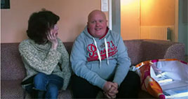
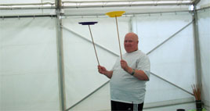

Ludovic, admis à l’IMED depuis douze ans, a aujourd’hui 23 ans.
Au centre d’accueil de jour depuis trois ans, il a pour des raisons familiales choisi de trouver une place avec un hébergement dans un établissement que nous connaissons bien puisqu’il s’agit de « la Gabrielle », notre proche cousin, à 8OO mètres de l’IMED, à Claye-Souilly.
Passé par l’hébergement de l’IMED, le service d’accueil jeunes majeurs puis le centre d’accueil de jour, Ludovic est une personne qui compte à l’IMED. Connu pour sa bonne humeur, il connait tous les éducateurs de l’établissement.

Ludovic, nous te souhaitons de réussir dans ce projet. Nous espérons te revoir à Claye pour les 40 ans de l’IMED, le 23 juin 2012.

C’est avec un peu de regrets que nous le voyons partir pour d’autres repères, d’autres amitiés, d’autres adultes qui vont eux aussi apprécier son caractère très sociable.